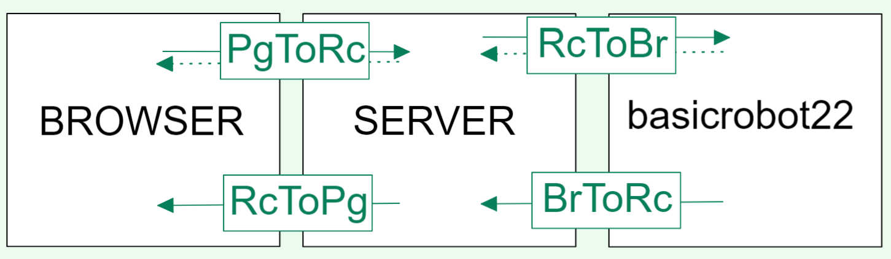
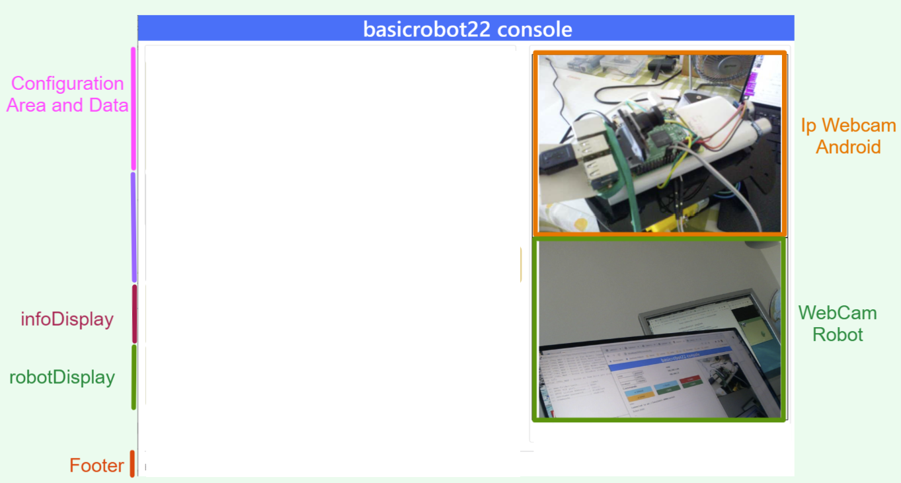
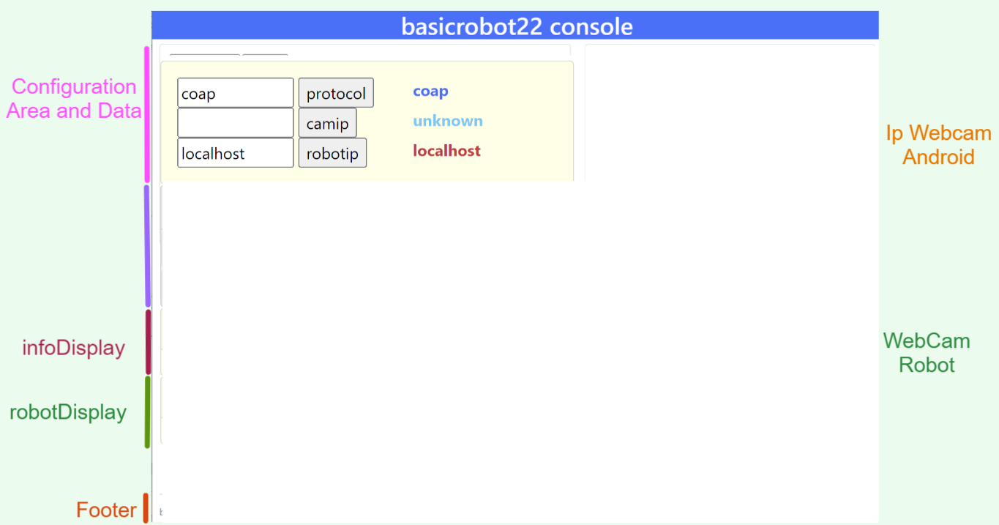
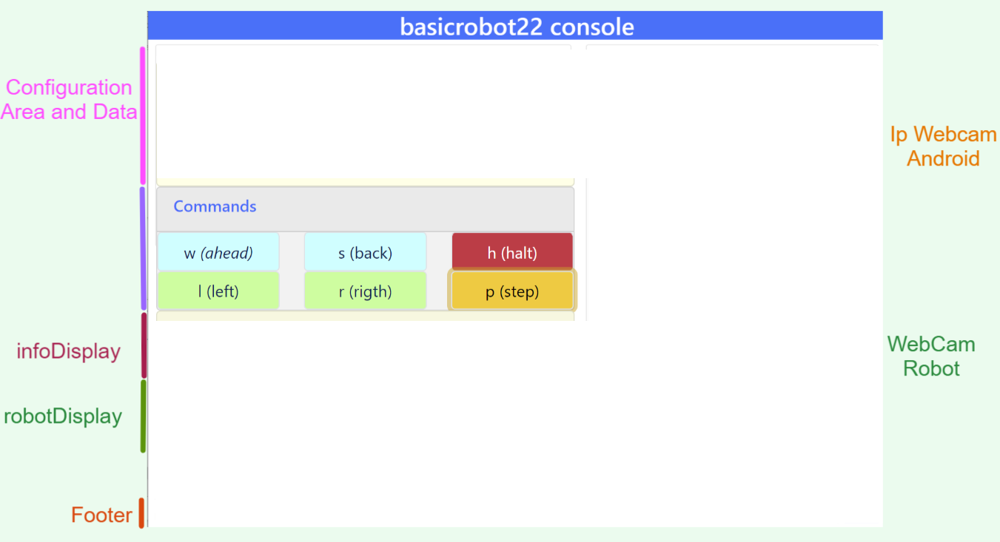
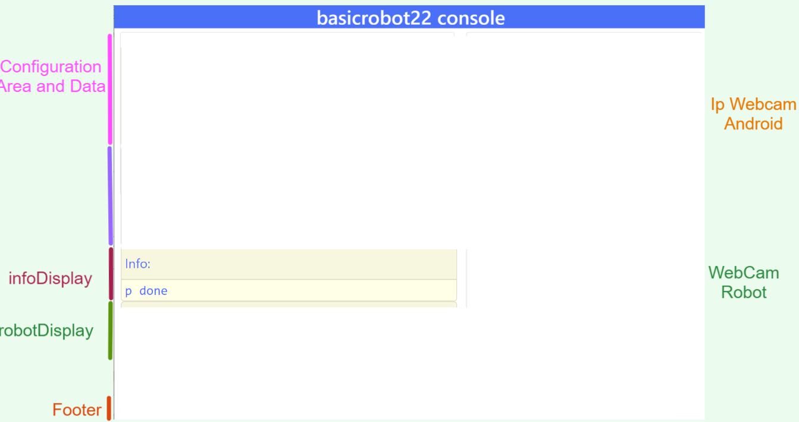
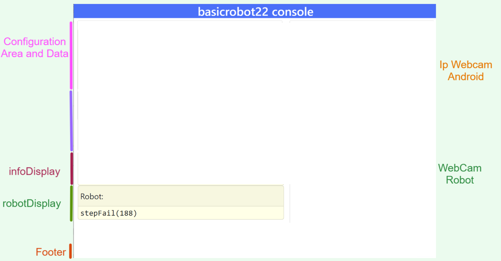
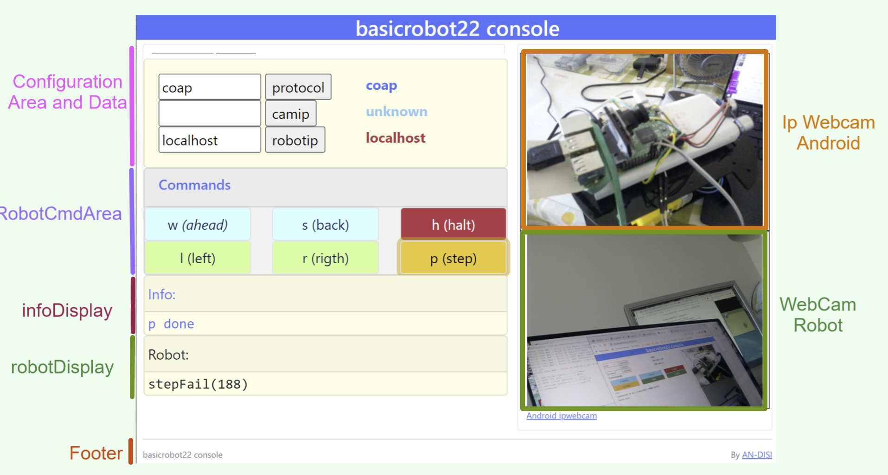
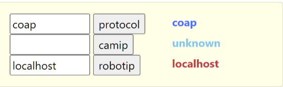
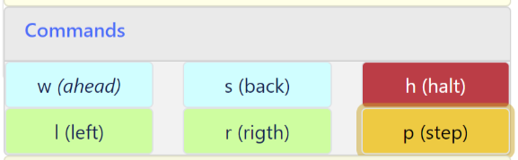

webrobot22¶
Lo scopo di questo lavoro è usare SpringBoot per costruire una applicazione Web che fornisca una console di comando per il BasicRobot22.
Procederemo in due passi:
Come primo passo, costruiremo la ‘parte statica’ dell’applicazione che riguarda la impostazione della pagina HTML.
Come secondo passo, costruiremo la ‘parte dinamica’ che permette all’applicazione Web di interagire da un lato con utente umano (attraverso un Browser) e da un altro lato con l’attore Qak che realizza il bascirobot22.
{kind=link}
Creazione del progetto
Iniziamo il progetto webrobot22 webrobot22: startup
Parte statica
Usiamo Bootstrap5 per impostare la pagina usando Bootstrap5
Visualizziamo la pagina statica, come primo passo di un processo di User experience design.
Interazioni tra i componenti¶
Parte dinamica
Impostiamo l’organizzazione di un RobotController lato server.
PgToRc: Realizziamo l’interazione sincrona Pagina-RobotController via HTTP
RcToBr: Realizziamo l’interazione RobotController-basicrobot22 usando un protocollo specificato dall’utente.
BrToRc: Realizziamo l’interazione basicrobot22-RobotController per far giungere alla applicazione Web informazioni sullo stato del sistema.
RcToPg: Realizziamo l’interazione asincrona RobotController-Pagina per visualizzare sulla pagina HTML le informazioni sullo stato del sistema, con la mediazione del RobotController.

{kind=link}
In linea di princpio, una pagina HTML potrebbe anche agire come osservatore diretto (via CoAP) del BasicRobot22. Tuttavia, notiamo che:
I Browser non supportano API JavaScript per CoAP per motivi di sicurezza (legate a UDP)
Questo rende necessario che il RobotController funga da mediatore tra le informazioni emesse via CoAP da
BasicRobot22 e la pagina, attraverso le interazioni BrToRc e RcToPg.
webrobot22: startup¶
Costruiamo il file
webRobot22.zipin accordo a Primi passi con SpringBoot.
{kind=link}
Scompattiamo il file
webRobot22.zipnella nostra cartella di lavoro.Modifichiamo
7.4.1in7.4.2nel filewebRobot22\gradle\wrapper\gradle-wrapper.propertiesAggiungiamo il file
gradle.propertiescon il contenuto:kotlinVersion = 1.6.0
Aggiungiamo il file
banner.txtinsrc\main\resources\usando bannerOnline (small font)Nel file
application.propertiesdisrc\main\resources\inseriamo:spring.application.name = webRobot22 spring.banner.location = classpath:banner.txt server.port = 8085
Enable SpringBoot live DevTools¶
La feature di auto-restart mediante Spring Developer Tools non sembra abilitata di default in Intellij (come avviene invece in Eclipse). Per provare ad attivarla manualmente, si consulti la rete, ad esempio : https://medium.com/javarevisited/spring-boot-developer-tools-and-intellij-b16c7e5f39e4
build.gradle di webRobot22¶
Aggiorniamo
build.gradle:plugins { ... id 'application' } version = '1.0' sourceCompatibility = '11' repositories { mavenCentral() flatDir { dirs '../unibolibs' } } dependencies { ... //Libreria Kotlin-runtime implementation 'org.jetbrains.kotlin:kotlin-stdlib-jdk8' //Per comunicazioni WebSocket NOSTOMP della pagina HTML implementation("org.springframework:spring-websocket:5.3.14") //webjars implementation 'org.webjars:webjars-locator-core' implementation 'org.webjars:bootstrap:5.1.3' implementation 'org.webjars:jquery:3.6.0' /* UNIBO ********************************** */ implementation name: 'uniboInterfaces' implementation name: '2p301' implementation name: 'unibo.comm22-1.1' implementation name: 'unibo.qakactor-2.8' //per ApplMessage } mainClassName = 'unibo.webRobot22.WebRobot22Application' jar { println("executing jar") from sourceSets.main.allSource manifest { attributes 'Main-Class': "$mainClassName" } }
I WebJars sono stati introdotti in Bootstrap e webJars.
La libreria
unibo.comm22-1.1.jarè costruita nel progetto it.unibo.comm22 (si veda Oltre TCP)La libreria unibo.qakactor22-2.8.jar è costruita nel progetto QActor (meta)model e utilizza la libreria precedente per le comunicazioni.
basicrobot22Gui.html¶
Avvalendoci di Bootstrap5, impostiamo una pagina HTML (nel file basicrobot22Gui.html in src/main/resources/templates)
in modo che presenti le aree mostrate in figura:
{kind=link}
ConfigurationArea and Data: area che include campi di input per la configurazione del sistema e campi di output che mostrano i valori dei dati di configurazione fissati dall’utente.
RobotCmdArea: area di input con pulsanti per inviare comandi di movimento al robot.
infoDisplay: area di output che visualizza informazioni di sistema.
robotDisplay: area di output che visualizza informazioni relative al robot o al suo ambiente.
Ip Webcam Android: area di output che visualizza lo stream prodotto da un telecamera posta su Android (ad esempio IpWebcam) o su PC. Viene introdotta come alternativa quando non si abbia un robot fisico dotato di telecamera.
WebCam robot: area di output che visualizza lo stream prodotto da un telecamera posta sul robot fisico.
Avvalendoci di Thymeleaf, impostiamo la pagina come un template che presenta alcuni campi (protocol, robotip, webcamip) che corrispondono a quanto definito nella Specifica dei dati applicativi, i cui valori verranno fissati dal RobotController nella fase di costruzione della pagina (si veda buildThePage).
Usiamo Bootstrap5¶
Abilitiamo l’uso di Bootstrap5, nella sezione head del file basicrobot22Gui.html e poi impostiamo la struttura
del contenuto della pagina:
<head>
<meta charset="UTF-8">
<meta name="viewport" content="width=device-width, initial-scale=1.0">
<title>basicrobot22Gui</title>
<link href=
"https://cdn.jsdelivr.net/npm/bootstrap@5.1.3/dist/css/bootstrap.min.css" rel="stylesheet">
<script src=
"https://cdn.jsdelivr.net/npm/bootstrap@5.1.3/dist/js/bootstrap.bundle.min.js"></script>
<link rel="stylesheet" href="css/issSpec.css"> <!-- stili custom -->
<link rel=
"shortcut icon" href="images/mbotIot.png" type="image/x-icon"> <!-- ICONA su browser -->
</head>
Contenuto della pagina¶
La pagina viene suddivisa in due Containers di tipo fluid, uno per il titolo e uno per il contenuto vero e proprio.
<body>
<div class="container-fluid pt-1 bg-primary text-white text-center">
<h1>basicrobot22 console</h1>
</div>
<div class="container-fluid">
<!-- Contenuto della pagina -->
</div>
<footer>
<!-- FOOTER -->
</footer>
</body>
Il contenuto della pagina viene organizzato entro una riga (di 12 colonne, come indicato in Grids )
che contiene due colonne: la colonna di sinistra (di ampiezza 7)
è riservata alla area di I/O, mentre la la colonna di destra (di ampiezza 5) è dedicata
alla visualizzazione degli stream di dati delle telecamere.
<!-- Contenuto della pagina -->
<div class="row"> <!-- Page main row -->
<div class="col-7"> <!-- I/O area col -->
<!-- CONFIGURATION Area and Data -->
<!-- ROBOTCmdArea -->
<!-- INFO display -->
<!-- ROBOT display -->
</div>
<div class="col-5"> <!-- Webcam area col -->
<!-- IPWebcam Android -->
<!-- Webcam robot -->
</div>
</div> <!-- Page main row -->
Schema delle aree di I/O¶
Le aree entro le colonne sono organizzate usando le Cards secondo lo schema:
<div class="card BGSTYLE TEXTCOLOR">
<div class="card-header px-1"> ... </div>
<div class="card-content px-1">
<!-- CARDCONTENT -->
</div>
</div>
Per le specifiche del tipo px-N, si veda Spacing.
Per i colori del testo (TEXTCOLOR) faremo riferimento agli standard Colors, mentre
per lo stile di background (BGSTYLE) faremo riferimento a Stili custom: issSpec.css.
Stili custom: issSpec.css¶
La specifica degli stili custom si trova nel file issSpec.css. Tutte le definizioni iniziano con il prefisso iss-.
WebcamArea¶
{kind=link}
Riportiamo la specifica della colonna relativa all’area di output che visualizza
gli stream (Ip Webcam Android e WebCam robot) prodotti dalle telecamere.
Per la visualizzazione, sfrutteremo la specifica Protocol-relative-URL (th:src) di ThymeleafSyntax.
<div class="col-5"> <!-- webcam col -->
<div class="card iss-bg-webcamarea px-1 border">
<div class="card-body">
<div class="row">
<img class="img-fluid"
th:src="@{${ 'http://'+webcamip+':8080/video'} }"
alt="androidcam" style="border-spacing: 0; border: 1px solid black;">
</div>
<div class="row">
<img class="img-fluid"
th:src="@{${ 'http://'+robotip+':8080/?action=stream'}}"
alt="raspicam" style="border-spacing: 0; border: 1px solid black;">
</div>
</div> <!-- card body -->
</div> <!-- card -->
</div><!-- webcam col -->
Il simbolo webcamip denota un campo del Model che viene fissato dal RobotController al valore immesso dall’utente nella AREA WEBCAM Android della sezione ConfigurationArea and Data.
Il simbolo robotip denota un campo del Model che viene fissato dal RobotController al valore immesso dall’utente nella AREA ROBOT ADDRESS della sezione ConfigurationArea and Data.
ConfigurationArea and Data¶
{kind=link}
La parte CONFIGURATION Area and Data del Contenuto della pagina viene organizzata come una card suddivisa in aree:
<!-- CONFIGURATION Area and Data -->
<div class="card iss-bg-inputarea">
<div class="card-body">
<!-- AREA PROTOCOL -->
<!-- AREA WEBCAM Android -->
<!-- AREA ROBOT ADDRESS -->
</div>
</div>
Struttura generale delle aree di I/O¶
<!-- AREA ... -->
<div class="row">
<div class="col-7">
<!-- InputArea -->
...
</div>
<div class="col-5 text-primary">
<!-- DataArea -->
...
</div>
</div> <!-- row -->
Le aree di input sono espresse mediante FormHTML con campi InputHTML.
Quando l’utente immette un dato in una Form di input e lo invia al server, il RobotController memorizza il dato e lo ritrasmetta alla pagina aggiornando il modello con
setConfigParams, come indicato in Interazione PgToRc (Pagina-RobotController).
Specifica dei dati applicativi¶
Il file application.properties definisce i valori iniziali dei campi di input che vengono visualizzati nella pagina.
robot22.protocol = coap robot22.robotip = not connected robot22.webcamip = unknown
I dati sono visualizzati in campi con identificatori referenziabili nel RobotController mediante Model, come indicato in Interazione PgToRc (Pagina-RobotController).
Vediamo nel dettaglio le parti di I/O per la configurazione del sistema.
AREA PROTOCOL¶
<!-- PROTOCOL InputArea -->
<form action="setprotocol" method="post">
<input type="text" size="10" id="protocolspec" name="protocol" value="coap">
<input type="submit" value="protocol">
</form>
<!-- PROTOCOL DataArea -->
<b><span th:text="${protocol}">tcp</span></b>
Il valore immesso dall’utente viene inviato via HTTP-POST al RobotController che lo
gestisce col metodo setprotocol memorizzando nel Model (si veda setConfigParams) e di qui, via Thymeleaf,
nel parametro protocol del template della pagina (si veda buildThePage).
AREA WEBCAM Android¶
<!--WEBCAM Android InputArea -->
<form action="setwebcamip" method="post">
<input type="text" size="10" id="webcamspec" name="ipaddr" value="">
<input type="submit" value="camip">
</form>
<!--WEBCAM Android DataArea -->
<b><span th:text="${webcamip}" id="webcamipaddr">unknown</span></b>
Il valore immesso dall’utente viene inviato via HTTP-POST al RobotController che lo
gestisce col metodo setwebcamip memorizzando nel Model (si veda setConfigParams) e di qui, via Thymeleaf,
nel parametro webcamip del template della pagina (si veda buildThePage).
AREA ROBOT ADDRESS¶
<!-- ROBOT ADDRESS InputArea -->
<form action="setrobotip" method="post">
<input type="text" size="10" id="configurespec" name="ipaddr" value="localhost">
<input type="submit" value="robotip">
</form>
<!-- ROBOT ADDRESS DataArea -->
<b><span th:text="${robotip}">not connected</span></b>
Il valore immesso dall’utente viene inviato via HTTP-POST al RobotController che lo
gestisce col metodo setrobotip memorizzando nel Model (si veda setConfigParams) e di qui, via Thymeleaf,
nel parametro robotip del template della pagina (si veda buildThePage).
RobotCmdArea¶
{kind=link}
Queta area presenta ButtonHTML per inviare a RobotController comandi per muovere il robot.
<div class="card iss-bg-cmdarea text-primary"> <!-- command card -->
<div class="card-header">
<h6>Commands</h6>
</div>
<div class="card-content"> <!-- pb-4 -->
<!-- See https://getbootstrap.com/docs/4.1/components/buttons/ -->
<div class="row"> <!-- w,s,h commands row -->
<div class="col"><button class="btn btn-block iss-btn-ligthblue border" id='w'>w <i>(ahead)</i></button></div> <!--class='btn btn-block btn-light-primary font-bold border' -->
<div class="col"><button class='btn btn-block iss-btn-ligthblue border' id='s'>s (back) </button></div>
<div class="col"><button class='btn btn-danger btn-block border' id='h'>h (halt) </button></div>
</div> <!-- w,s,h commands row -->
<div class="row"> <!-- p,l,r commands row -->
<div class="col"><button class='btn btn-block iss-btn-ligthgreen border' id='l'>l (left) </button></div>
<div class="col"><button class='btn btn-block iss-btn-ligthgreen border' id='r'>r (rigth) </button></div>
<div class="col"><button class='btn btn-warning btn-block border' id='p'>p (step) </button></div>
</div> <!-- p,l,r commands row -->
</div> <!-- command card-content -->
</div> <!-- command card -->
Il conando immesso dall’utente con un button viene inviato via HTTP-POST al RobotController che lo
gestisce col metodo doMove.
infoDisplay¶
{kind=link}
<div class="card iss-bg-infoarea text-primary">
<div class="card-header px-1">Info:</div>
<div class="card-content px-1">
<span id="display">...</span>
</div>
</div>
Il contenuto del campo denotato dall’dentificatore display è dinamicamente modificato da ioutils.js e da wsminimal.js.
robotDisplay¶
{kind=link}
<div class="card iss-bg-robotarea text-dark">
<div class="card-header px-1">Robot:</div>
<div class="card-content px-1">
<span id="robotDisplay" >...</span>
</div>
</div>
Il contenuto del campo denotato dall’dentificatore
robotDisplayè dinamicamente definito da da wsminimal.js.
Pagina finale¶
{kind=link}
Visualizziamo la pagina statica¶
Eseguo gradlew bootRun e apro un browser su localhost:8085
Parte dinamica¶
La realizzazione della parte dinamica si avvale di supporti sia nella pagina Web sia nel server:
{kind=link}
Pagina HTML: wsminimal.js, ioutils.js (e anche Stili custom: issSpec.css).
Server: RobotUtils.java
RobotController¶
Il Controller definisce i valori di alcune variabili locali, che comprendono gli attributi usati nel Model.
Il Model utilizzato dal RobotController opera come un contenitore per dati applicativi, che vengono aggiornati, prima dell’invio della pagina di risposta, utilizzando il metodo setConfigParams.
@Controller
public class RobotController {
protected String robotName = "basicrobot";
protected String mainPage = "basicrobot22Gui";
//Settaggio di variabili relative ad attributi del modello
@Value("${robot22.protocol}")
String protocol;
@Value("${robot22.webcamip}")
String webcamip;
@Value("${robot22.robotip}")
String robotip;
//Metodi di INTERAZIONE ...
@ExceptionHandler
public ResponseEntity handle(Exception ex) { ... }
}
Il Settaggio degli attributi del modello avviene con riferimento alla Specifica dei dati applicativi.
Interazione PgToRc (Pagina-RobotController)¶
La pagina basicrobot22Gui.html viene dotata di supporti utili per la interazione con il server attraverso codice JavaScript, contenuto nei files ioutils.js e wsminimal.js.
JavaScript di supporto nella pagina¶
ioutils.js¶
Il file ioutils.js definisce operazioni (setMessageToWindow e addMessageToWindow) utili
a inserire messaggi in aree denotate dall’argomento outfield.
function setMessageToWindow(outfield, message) {
var output = message.replace("\n","<br/>")
outfield.innerHTML = `<tt>${output}</tt>`
}
Aree in cui inserire messaggi sono ad esempio infoDisplay e robotDisplay
const infoDisplay = document.getElementById("display");
const robotDisplay = document.getElementById("robotDisplay");
Si defnisce una funzione che usa Ajax per inviare via HTTP comandi POST al server e per visualizzare nell’area infoDisplay un messaggio di successo/falimento dell’invio .
function callServerUsingAjax(message) {
$.ajax({
type: "POST",
url: "robotmove", //Dove inviare i dati
data: "move=" + message, //Dati da inviare
dataType: "html",
success: function(msg){
setMessageToWindow(infoDisplay,message+" done")
},
error: function(){
alert("Chiamata fallita, si prega di riprovare...");
}
});
}
wsminimal.js in webrobo22¶
Il file wsminimal.js, è già stato introdotto in RobotCleanerWeb e in WebApplication con SpringBoot. Esso definisce funzioni che realizzano la connessione via socket con il server e funzioni di I/O che permettono di inviare un messaggio al server e di visualizzare la risposta.
Si riporta qui il codice della funzione connect che crea una WebSocket usando l’URL
ws://SERVERHOSTIP/socket.
function connect(){
var host = document.location.host;
var pathname = "/"
var addr = "ws://" +host + pathname + "socket" ;
// Assicura che sia aperta un unica connessione
if(socket !== undefined && socket.readyState !== WebSocket.CLOSED){
alert("WARNING: Connessione WebSocket già stabilita");
}
socket = new WebSocket(addr);
socket.onopen = function (event) {
setMessageToWindow(infoDisplay,"Connected to " + addr);
};
socket.onmessage = function (event) {
console.log("ws-status:" + `${event.data}`);
console.log(""+`${event.data}`);
setMessageToWindow(robotDisplay,""+`${event.data}`);
};
}//connect
La proprietà
socket.onopendefinisce l’handler invocato alla apertura della socket. Questo handler invocasetMessageToWindowdi ioutils.js per visualizzare nell’area infoDisplay l’avventuta apertura.La proprietà
socket.onmessagedefinisce l’handler invocato alla ricezione di un messaggio. Questo handler invocasetMessageToWindowdi ioutils.js per visualizzare il messaggio nell’area robotDisplay.
Chiamate HTTP al Controller¶
La interazione tra il Browser che contiene la pagina HTML e il Controller della Web application è relativa a richieste:
di tipo GET, iniviata dal Browser all’inizio della connessione;
di tipo POST, provenienti dalle parti di input della ConfigurationArea and Data.
 
{kind=link}
{kind=link}
//Metodi di INTERAZIONE ...
@GetMapping("/")
public String entry(Model viewmodel) {
buildThePage(viewmodel);
}
//Richieste di configurazione
@PostMapping("/setprotocol")
public String setprotocol(Model m,@RequestParam String protocol){...}
@PostMapping("/setwebcamip")
public String setwebcamip(Model m,@RequestParam String ipaddr){...}
@PostMapping("/setrobotip")
public String setrobotip(Model m,@RequestParam String ipaddr){...}
//Comandi al robot
@PostMapping("/robotmove"))
public String doMove(Model m,@RequestParam String move ){...}
Al termine della elaborazione di ciascuna richiesta, il Controller risponde al Browser come descritto in Creazione della pagina di risposta.
Creazione della pagina di risposta¶
Il metodo buildThePage restituisce la pagina di risposta partendo dal template referenziato
dalla variabile mainPage. Questo template include campi che vengono
aggiornati da Thymeleaf con i valori correnti degli attibuti del Model
(metodo setConfigParams).
buildThePage¶
protected String buildThePage(Model viewmodel) {
setConfigParams(viewmodel);
return mainPage;
}
setConfigParams¶
protected void setConfigParams(Model viewmodel){
viewmodel.addAttribute("protocol", protocol);
viewmodel.addAttribute("webcamip", webcamip);
viewmodel.addAttribute("robotip", robotip);
}
setwebcamip¶
Il metodo setwebcamip del Controller tiene traccia nel Model dell’indirzzo IP della WebCam su Android (o su PC).
Lo stream prodotto da questa WebCam (una volta attivata) viene visualizzato nella card superiore della WebcamArea.
@PostMapping("/setwebcamip")
public String setwebcamip(Model viewmodel, @RequestParam String ipaddr ){
webcamip = ipaddr;
viewmodel.addAttribute("webcamip", webcamip);
return buildThePage(viewmodel);
}
setprotocol¶
Il metodo setprotocol del Controller tiene traccia nel Model del protocollo che l’utente intende usare
per le interazioni tra RobotController e il BasicRobot22.
protected boolean usingTcp = false;
@PostMapping("/setprotocol")
public String setprotocol(Model viewmodel, @RequestParam String protocol ){
this.protocol = protocol;
usingTcp = protocol.equals("tcp");
viewmodel.addAttribute("protocol", protocol);
return buildThePage(viewmodel);
}
L’utente può scegliere tra TCP e CoAP. In ogni caso, il protocollo CoAP viene comunque usato
per realizzare la Interazione BrToRc (basicrobot22-RobotController).
setrobotip¶
Il metodo setrobotip del Controller tiene traccia nel Model dell’indirzzo IP del robot (ipaddr) immesso dall’utente
e inizializza una connessione con BasicRobot22 usando il protocollo selezionato dall’utente con setprotocol.
Per realizzare le connessioni, usiamo la libreria unibo.comm22-1.1.jar costruita dal progetto
unibo.comm2022 descritto in Supporti per comunicazioni.
In ogni caso, inizializza anche una connessione CoAP con il robot, associando ad essa un RobotCoapObserver che ha lo scopo di realizzare la Interazione RcToPg (RobotController-Pagina).
@PostMapping("/setrobotip")
public String setrobotip(Model viewmodel, @RequestParam String ipaddr ){
robotip = ipaddr;
viewmodel.addAttribute("robotip", robotip);
if( usingTcp ) RobotUtils.connectWithRobotUsingTcp(ipaddr+":8020");
//Attivo comunque una connessione CoAP per osservare basicrobot22
CoapConnection conn = RobotUtils.connectWithRobotUsingCoap(ipaddr+":8020");
conn.observeResource( new RobotCoapObserver() );
return buildThePage(viewmodel);
}
RobotUtils.java¶
La classe RobotUtils è una utility class che fornisce le operazioni di connessione che costruiscono
oggetti di tipo L’interfaccia Interaction2021 (di cui CoapConnection è una specializzazione).
public class RobotUtils {
public static final int robotPort = 8020;
private static Interaction2021 conn;
public static void connectWithRobotUsingTcp(String addr){
...
conn = TcpClientSupport.connect(addr, robotPort, 10);
}
public static CoapConnection connectWithRobotUsingCoap(String addr){
...
String ctxqakdest = "ctxbasicrobot";
String qakdestination = "basicrobot";
String path = ctxqakdest+"/"+qakdestination;
conn = new CoapConnection(addr, path);
retunr (CoapConnection) conn;
}
Interazione RcToBr (RobotController-basicrobot22)¶
La interazione tra il Controller e il robot viene attivata dall’utente usando i button
della RobotCmdArea, la cui pressione provoca la esecuzione del metodo doMOve
del RobotController.
doMove¶
Il metodo doMove del Controller non modifica il Model,
ma realizza la interazione con BasicRobot22
invocando il metodo RobotUtils.sendMsg.
@PostMapping("/robotmove")
public String doMove(Model viewmodel , @RequestParam String move ){
try {
RobotUtils.sendMsg(robotName,move);
} catch (Exception e) {
ColorsOut.outerr("RobotController | doMove ERROR:"+e.getMessage());
}
return mainPage;
}
RobotUtils.sendMsg¶
public class RobotUtils {
public static IApplMessage moveAril(String robotName, String cmd ) {
//costruisce dispatch o request
}
public static void sendMsg(String robotName, String cmd){
try {
String msg = moveAril(robotName,cmd).toString();
conn.forward( msg );
} catch (Exception e) {...}
}
}
Il metodo moveAril restituisce:
un dispatch in relazione ai comandi w,s,l,r,h
una request in relazione al comando p (step)
Interazione BrToRc (basicrobot22-RobotController)¶
Avviene sfruttando il fatto che BasicRobot22 è una risorsa CoAP-observable (si veda Attori come risorse CoAP) che aggiorna i suoi CoAP-observers utilizzando l’operazione built-in updateResource per le informazioni connesse al requisito observable.
Per ricevere e gestire queste informazioni (messaggi di stato), viene introdotto il POJO RobotCoapObserver.
RobotCoapObserver¶
Il RobotCoapObserver è un POJO che usa WebSocketConfiguration per inviare i messaggi di stato a tutti i client HTTP connessi al server.
public class RobotCoapObserver implements CoapHandler{
@Override
public void onLoad(CoapResponse response) {
//send info over the websocket
WebSocketConfiguration.wshandler.sendToAll(
"" + response.getResponseText());
}
@Override
public void onError() { ... }
}
Interazione RcToPg (RobotController-Pagina)¶
Il RobotCoapObserver si avvake del WebSocketHandler gia introdotto
in WebApplication con SpringBoot per
inviare i messaggi di stato a tutti i client HTTP connessi al server.
public class WebSocketHandler extends AbstractWebSocketHandler implements IWsHandler {
...
public void sendToAll(TextMessage message) throws IOException{
Iterator<WebSocketSession> iter = sessions.iterator();
while( iter.hasNext() ){
iter.next().sendMessage(message);
}
}
}